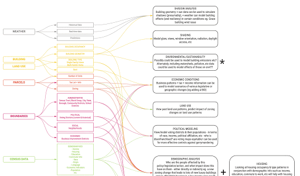
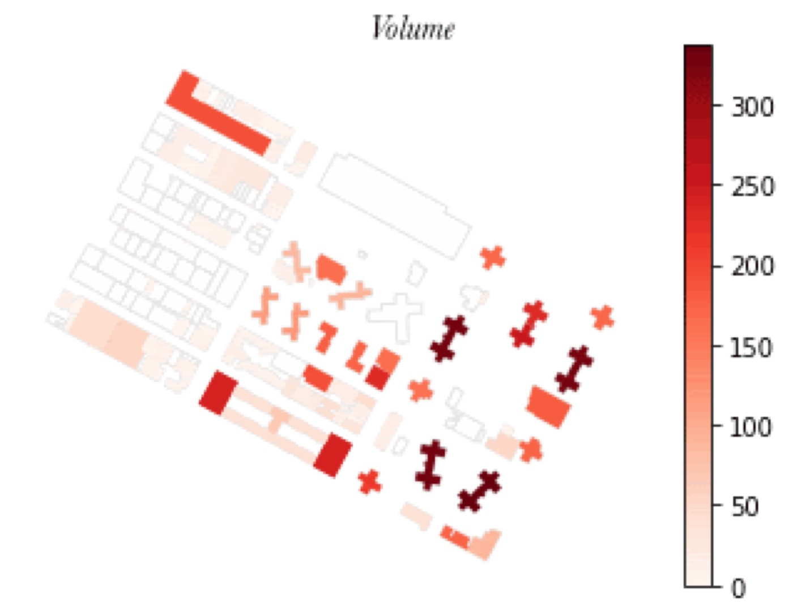
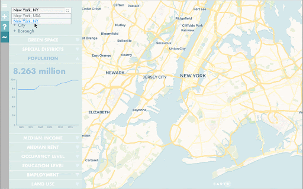

Estimating pedestrian activity
Generative design tools need good data about streets. This pipeline estimates street-level foot traffic and feeds it straight in.

01The problem
Getting geospatial data into generative design was slow and manual, which kept the tools stuck on narrow test cases. The first step was research into which use cases mattered most, and which standard datasets, like pedestrian activity and transit access, they needed.

02The work
An automated pipeline pulls the data in. Census population and workforce counts are then split down to individual buildings to estimate activity at street level.

03The result
Built on a test site, then confirmed in other cities and over larger areas. Generative design can now draw on building-level population, workforce and land use, plus a “buzz metric” for pedestrian activity.

Beyond the Blue Dot

Say hello.
Working on something for the built environment? I’d love to hear about it.